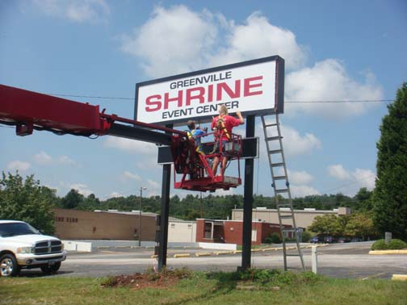
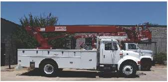
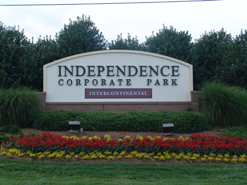
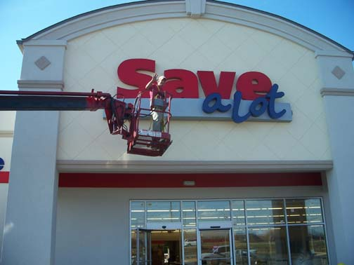
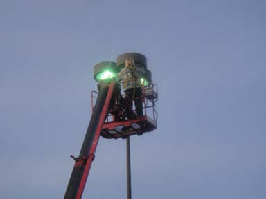

At Signs By Design we can install or remove all types of signage. We have an experienced staff with the necessary equipment to make sure your job is installed properly. Some of our equipment includes crane trucks, trailers, welders and augers.
We remove, install and service signs for both local clients and national accounts. Our installation service includes surveys, permitting and installations. Besides installation, we also service, repair, and refurbish existing signage and lights.
Our experienced staff can do whatever is required for your particular job.
And as always, our success depends on your satisfaction.

Available Services
Repairs

Weather your sign lights partially, bad weather tears up your sign or it's been hit, our professional staff can take care of any problem you have with your sign. We have experience with repairing and servicing pylons, cabinets, channel letters, neon, LED, digital message boards and more.
Refurbishing

We can refurbish portions of a sign or the entire sign. If you have parking lot poles that need to be repainted, we can do that also. If you're not sure of what needs to be done to your existing sign or lights, or if you need assistance in deciding on a new sign verses refurbishing your sign, we'll be glad to discuss your options.
Survey/Permit

We survey signs for all our clients. For new installations and some face replacements, permits are required. Our staff has the capability of acquiring all necessary permits for your sign installation. Remember that most areas require electrical hookups to be permitted and installed by a certified electrician.
Lighting

We can change light bulbs both internally and externally. These bulbs can be found in parking lot lights, signs, walpacks, decorative lights and security lights. We can install timers and photo cells if needed. Signs by Design can also install light fixtures and parking lot poles.